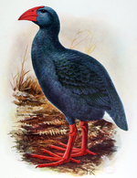

Artigos em Destaque

Porphyrio coerulescens é uma espécie hipotética extinta de ave da família dos ralídeos, endêmica da ilha da Reunião, uma ilha no Oceano Índico a leste de Madagascar. Embora conhecida apenas a partir dos relatos de visitantes da ilha dos séculos XVII e XVIII, foi cientificamente nomeada em 1848, com base na descrição de 1674 de Sieur Dubois. Uma considerável literatura foi subsequentemente dedicada às suas possíveis afinidades evolutivas, e os pesquisadores atuais concordam na sua classificação no gênero Porphyrio. É considerada misteriosa e enigmática devido à falta de qualquer evidência física de sua existência.
Esta ave foi descrita como de plumagem inteiramente azul, com o bico e pernas vermelhos. Dizia-se que era do tamanho de um íbis-terrestre-de-reunião ou de uma galinha, o que equivale a 65 a 70 cm de comprimento, e pode ter tido uma aparência semelhante a do takahe. Apesar de ser de fácil captura, era um corredor rápido e capaz de voar, embora o fizesse com relutância. (leia mais...)
Curiosidades
… a primeira fatalidade automobilística da história, na qual morreu a cientista Mary Ward (foto), aconteceu em 1869?
… sendo aquecido apenas com o calor do corpo humano, a temperatura no interior de um iglu pode alcançar valores próximos aos 16 °C?
… a Batalha de Curupaiti foi a maior derrota aliada na Guerra do Paraguai, que não culminou em um tratado de paz devido à recusa de D. Pedro II em negociá-lo com Solano López?
… em 2006, o álbum de estreia de Paris Hilton, Paris, foi alvo de uma paródia do artista de rua britânico Banksy, que substituiu 500 cópias do álbum em lojas do Reino Unido por cópias adulteradas?
… em 1949, Barreto Pinto tornou-se o primeiro deputado federal brasileiro cassado por quebra de decoro ao posar de cuecas para uma revista?
… com uma massa corporal estimada em 635 kg, o estadunidense Jon Brower Minnoch foi o homem mais pesado da história?
… as larvas vivas presentes no queijo sardo casu marzu são capazes de pular a uma altura de 15 cm, podendo atingir os olhos de quem o consome?
… o sistema planetário da estrela TRAPPIST-1 possui o maior número de planetas (sete no total) com dimensões semelhantes à Terra e com condições favoráveis à existência de água líquida?